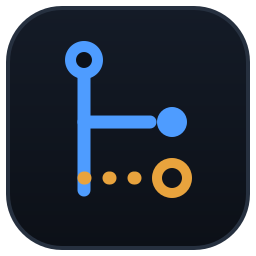

Claude Code ⇄ Webflow MCP
Patchbay
Claude Code
un token OAuth par jack, chacun scopé à son site
＋ Brancher un projet
Dossier du projet
Chemin du dossier
Nom du serveur MCP
Ce dossier seulement — recommandé
Partout
Brancher
Annuler